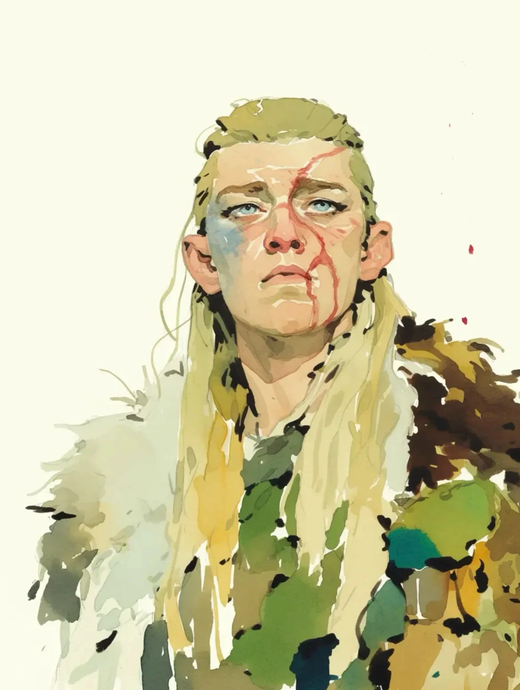

부서진 방패와 울려 퍼지는 전쟁의 함성을 뚫고 전사는 비틀거리며 앞으로 나아갔고, 피가 그녀의 발자국마다 자국을 남겼다.
[Slicing through the haze of shattered shields and echoed war cries, the warrior staggered forward, blood marking each step.]
이제 부러진 창과 쪼개진 나무 조각들의 음산한 풍경이 된 전장은, 그녀가 혼돈의 잔해와 명예의 스쳐 지나가는 기억들 사이를 지나갈 때 마지못해 침묵에 잠겼다.
[The battlefield, now a grim tapestry of broken spears and splintered wood, faded into a reluctant silence as she moved between remnants of chaos and fleeting memories of honor.]
모든 발걸음은 과거 전투의 무게를 짊어졌다—그녀의 이마를 가로지르는 흉터, 육체적 그리고 내면의 갈등을 말해주는 새로운 상처들.
[Every step carried the weight of past battles—a scar etched across her brow, fresh wounds that told of conflicts both physical and inner.]
패배와 후회의 어둠 속에서, 그녀는 자신의 검을 휘두르는 모든 순간이 운명처럼 느껴졌던 시간을 회상했다. 하지만 지금은 구원의 꿈보다 생존이 우선이었고, 모든 흉터는 전쟁의 가혹한 진실을 속삭였다.
[Amid the darkness of defeat and regret, she recalled a time when each swing of her sword felt destined. But now, survival trumped the dream of redemption, and every scar whispered the harsh truth of war.]
잃어버린 생명들의 흔적이 널브러진 빈터에서, 그녀의 시선은 진흙에 반쯤 묻힌 외로운 펜던트에 머물렀다. 그 표면에는 옛 미덕의 언어인 희미해진 상징들이 새겨져 있었고, 잠시 그녀는 멈춰 서서 손바닥 위의 차가운 금속이 더 평온했던 날들을 상기시키도록 했다.
[In a clearing strewn with remnants of lives lost, her gaze fell upon a lone pendant half-buried in the mud. Its surface bore faded symbols—a language of old virtues—and for a moment, she paused, letting the cool metal in her palm remind her of quieter days.]
그 장신구의 더 깊은 의미는 여전히 모호했지만, 그것은 끊임없는 투쟁을 넘어선 삶, 잃어버린 평화의 약속을 암시했다.
[Though the token’s deeper meaning remained elusive, it hinted at a life beyond relentless strife, a lost promise of peace.]
방황하는 웃음소리, 거칠고 낯선 그 소리가 그녀의 몽상을 꿰뚫었다; 그것은 전투의 대가가 그녀의 영혼에 스며드는 동안에도 삶의 부조리함을 조롱했다.
[A stray laugh, harsh and unfamiliar, sliced through her reverie; it mocked the absurdity of life even as battle’s cost bled into her soul.]
쓴 미소를 지으며, 그녀는 펜던트를 튜닉 안에 넣었다—끝없는 전투의 공허함에 대항하는 작지만 도전적인 행동이었다. 그녀를 둘러싼 세상은 잔인하고 무자비했지만, 이 작은 몸짓은 거의 희망과 같은 무언가의 불씨를 지폈다.
[With a bitter smirk, she tucked the pendant into her tunic—a small, defiant act against the emptiness of endless combat. The world around her was brutal and unforgiving, yet this tiny gesture kindled a spark of something almost like hope.]
거친 숨을 내쉬며, 그녀는 계속 나아갔고, 모든 발걸음은 조용한 저항이었다. 그녀의 얼굴에 난 흉터와 결의와 후회 사이의 흐릿한 경계선은 갈등에 깊이 젖은 삶을, 하지만 또한 구원에 대한 욕망의 불꽃을 조용히 증명했다.
[Her breath ragged, she pressed on, every step a quiet defiance. The scar on her face and the blurred line between resolve and remorse bore silent witness to a life steeped in conflict, but also to a flicker of desire for redemption.]
여기엔 깔끔한 마무리도, 마법 같은 결말도 없었다, 하지만 불확실한 밤의 품 속에서, 그녀는 계속 나아갔다. 각각의 흉터, 각각의 핏방울은 산산조각난 존재 속에서도 여전히 굴하지 않는 무언가가 싸울 용기를 내고 있다는 것을 상기시켰다.
[There was no neat closure here, no magical ending, but in the uncertain embrace of night, she carried on. Each scar, each drop of blood, was a reminder that even in shattered existence, something unyielding still dared to fight.]